Most of the images contained herein are in the public domain. For those which are not, every effort has been made to identify and receive permission from copyright holders. Some images, while in the public domain, have been reproduced from published works; these have been identified in the bibliographic details that follow the image captions.
Images have been chosen on the following basis: persons, places, events, and objects actually recorded in the diaries as having been met, visited, attended, owned, or seen by Anna Whistler; recorded in the diary of a journey made to Edinburgh by Anna Whistler’s half-sister, Eliza Winstanley (see Appendix D); referred to in the introductory material; and referred to in the biographies of friends, family, and aquaintances contained in Appendix E.
Every effort has been made to locate images of individuals presented in this volume, but I was unable to find images of a number of Anna Whistler’s aquaintances that I would have liked to include, for example John Stevenson Maxwell.1 At times, the images are of poorer quality than I would have liked, but I have chosen to include them nonetheless, as they are often the only known – or the best available – image of these individuals.
In selecting images, research was focused firstly on images of the 1840s, secondly on images of the 1830s and 1850s, and then for images beyond the 1850s. My preference was first for photographs; then for artists’ original depictions held by museums; then for illustrations of artists’ works recorded in printed sources. Dates for images are recorded in the bibliographic details below each image.
The images presented are grouped according to the following categories: Anna McNeill Whistler’s extended family; the Whistlers’ lives in the United States; images associated with Eliza Winstanley’s diary, which Anna Whistler read; Anna Whistler’s journey to St. Petersburg with her family in 1843; the city of St. Petersburg, including the Bobrinskii House, in which the Whistlers lived, and the Imperial Academy of Fine Arts and James Whistler’s experiences there; other artists, musicians, scientists, and literary figures; Major Whistler’s work colleagues on the St. Petersburg–Moscow Railway and at the Alexandrofsky Head Mechanical Works; friends and associates of the Whistlers in St. Petersburg; other significant persons and personages – many of them St. Petersburg residents who were part of the Whistlers’ world – including members of the military, diplomats, nobility, and other foreign visitors to St. Petersburg, such as dentist Dr. Edward Maynard, who fixed Whistler family members’ teeth; daily Russian life, ranging from peasant games to religious festivals; the environs of St. Petersburg; the Imperial family; places and images associated with Grand Duchess Aleksandra Nikolaevna, whose death had a strong impact on both the Russian and the foreign communities in St. Petersburg; Anna Whistler and her children’s trip to Germany and England in the summer of 1847, which culminated in Debo’s wedding; and Anna Whistler and her children’s trip to Copenhagen, England, and the Isle of Wight in the summer of 1848.
By including these images, I hope to further increase my readers’ understanding of St. Petersburg in the 1840s, in which Anna Whistler lived and wrote her diaries. Once again, I wish to express my gratitude for the gracious permissions given by those who were approached as contributors.
Anna McNeill Whistler’s Extended Family
Image 1
Anna Whistler in St. Petersburg in 1845
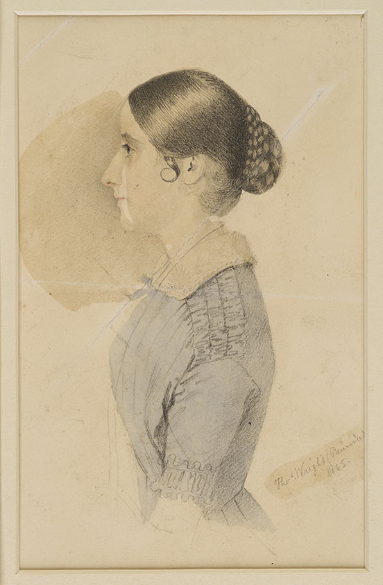
Thomas Wright (1792–1849). Anna Whistler.1845. Pencil and watercolor. 6 x 4½ in. (16.9 x 10.6 cm). Signed “Thos. Wright,” and in Russian characters “Райт” (“Rait”), 1845. Hunterian Art Gallery, University of Glasgow (GLAHA:54135); bequeathed by Rosalind Birnie Philip, 1958. [full resolution image] “Mrs. Whistler’s dress bodice shows the slopping shoulder line of the 1840s, with the sleeves set in a bit above her biceps. The front of the bodice is arranged in typical loose gathers radiating upward from the centre waist in a fan shape to the shoulder seams, where the fullness is gathered again by several rows of shirred stitching. The modest colour of her dress is appropriate to the taste of the period and is complemented by the soft white linen or cotton collar, which was likely embroidered with small white flowers and dots and edged with narrow bobbin lace.” (Ivan Sayers, honorary curator of the BC Society for the Museum of Original Costume and curator emeritus of the Museum of Vancouver)
Image 2
In September 1865, Anna Whistler, accompanied by James and Willie, traveled to Coblenz, Germany, to see an eye specialist.
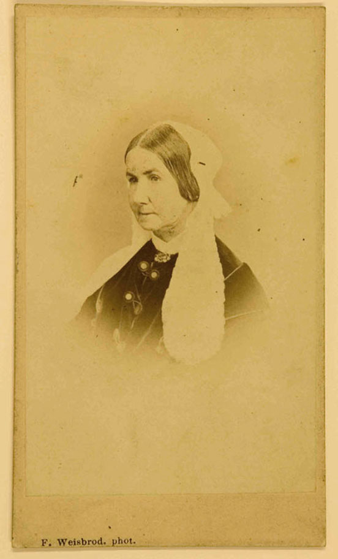
Photograph of Anna Whistler. 1860s. Albumen print. 9 x 5.6 cm; mounted on card, 10.4 x 6 cm. Imprint on mount: “F. Weisbrod, Photograph, Bleichstrasse 70, Frankfurt a. M. Between summer 1864 and autumn 1865”; inscribed on verso: “Anna M. Whistler.” GUL: Whistler Collection, PH 1/56.
Image 3
James Whistler created this etching of Anna Whistler standing in 1871.
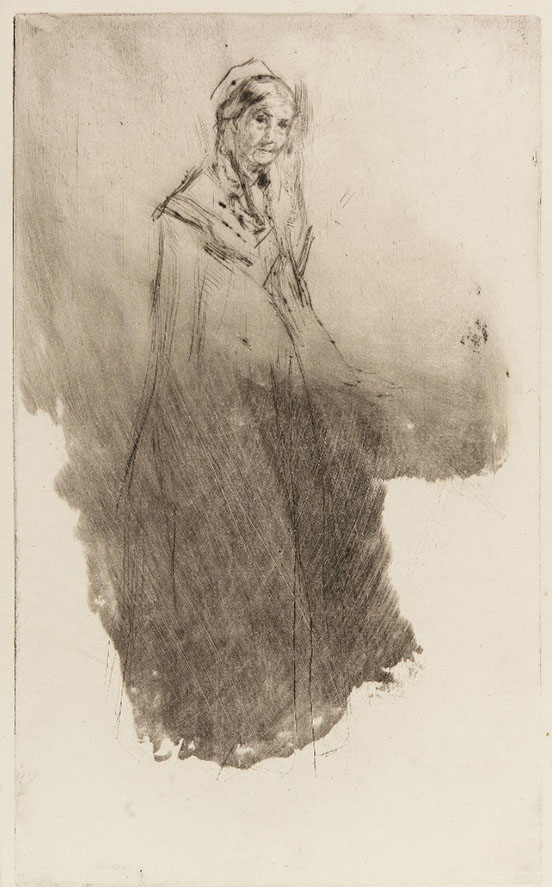
James McNeill Whistler (1834–1903). Whistler’s Mother. 1871. Drypoint on paper. 25.2 x 15.3 cm. Freer Gallery of Art, Smithsonian Institution, Washington, DC (F1903.252).
Image 4
This portrait of Anna Whistler, seated, was executed by James Whistler, also in 1871.
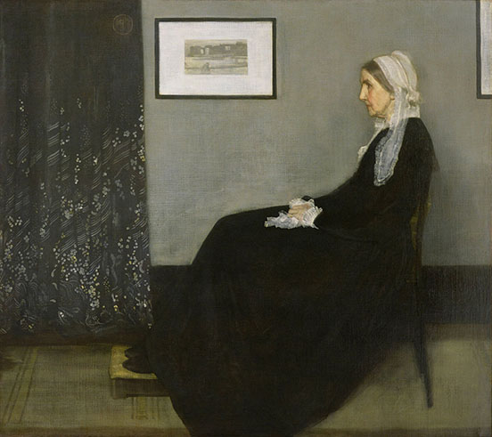
James McNeill Whistler (1834–1903). Arrangement en gris et noir no. 1 [Arrangement in Grey and Black No. 1, also called Portrait of the Artist’s Mother]. 1871. Oil on canvas. 56.8 x 63.9 in. (144.3 x 162.4 cm). Musée d’Orsay, Paris (RF 699).
Image 5
Brouet seems to be imagining Anna Whistler in the 1830s–1840s in private, with her hair falling loosely.
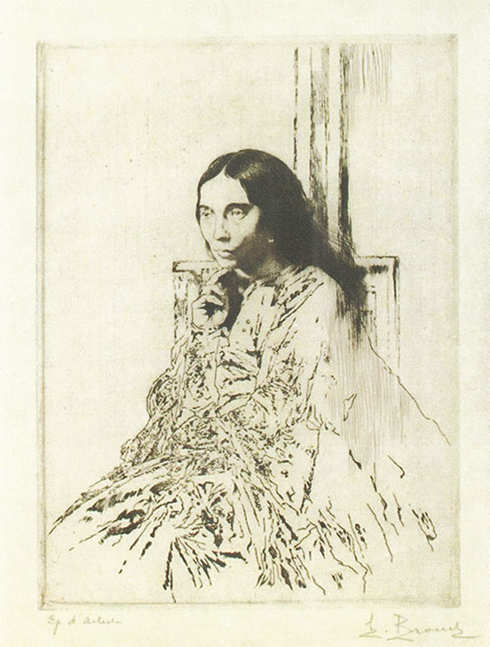
Auguste Brouet (1872–1941). La Mère de Whistler [Whistler’s Mother]. 1900–1910. Etching and drypoint. Artist’s proof; signed. 9¾ x 7 in. David Barnett Gallery, Milwaukee, WI (G.261).
Image 6
Anna Whistler’s handwriting from the diaries
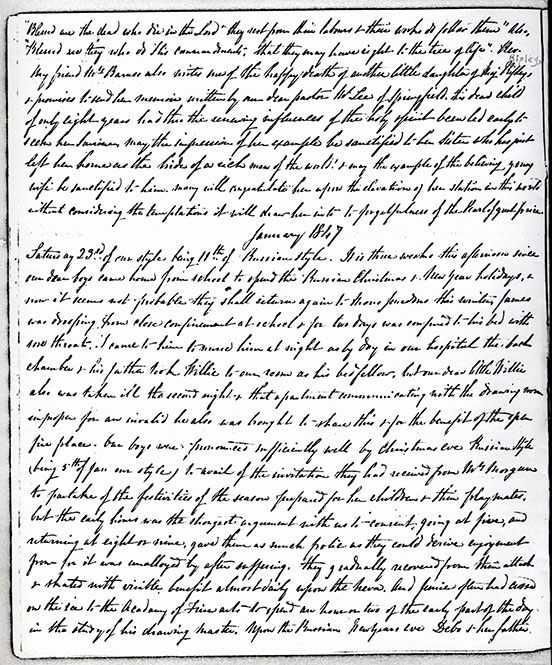
January 1847 / Saturday 23ƨ of our style being 11ƫ of Russian style, AWPD: Part II.
Image 7
Major George Washington Whistler, before July 1842, and his departure for Russia
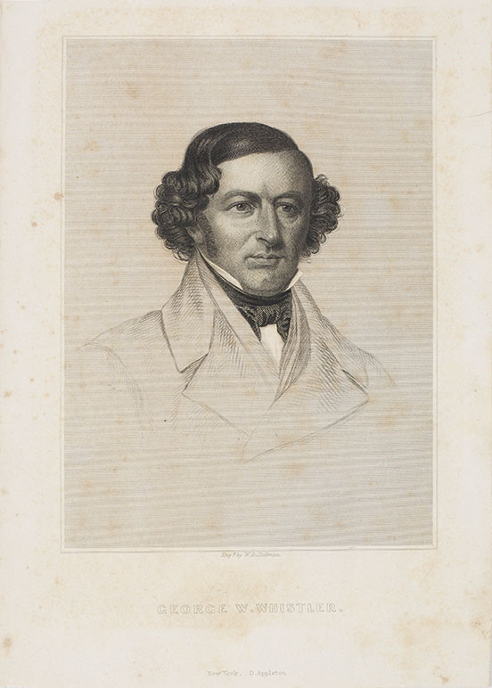
W.G. Jackman. Portrait of George W. Whistler. Mid 19th century. Steel engraving on paper. 6 x 4 in. (15.4 x 11.2 cm). Freer Gallery of Art, Smithsonian Institution, Washington, DC (F1907.632).
Image 8
Major George Washington Whistler, before July 1842, and his departure for Russia
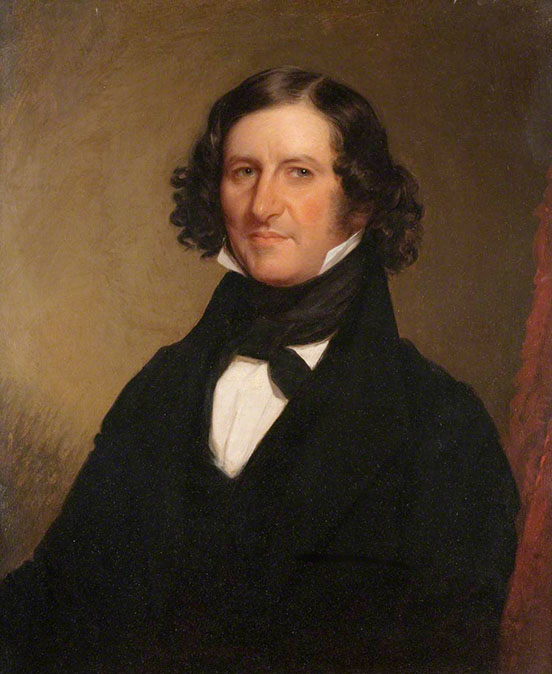
Chester Harding (1792–1866). George Washington Whistler. c. 1840–1842. Oil on canvas. 76.2 x 63.5 cm. Hunterian Art Gallery, University of Glasgow (GLAHA:54134); bequest of Joseph Whistler Revillon, 1955.
Image 9
Colin Ingersoll’s invitation to Major Whistler’s funeral.
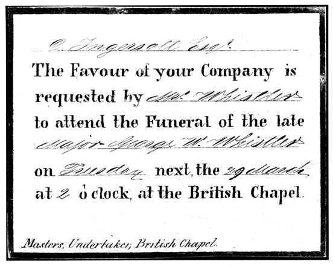
Photocopy kindly supplied to E. Harden by Special Collections, Mugar Library, Boston University, in the late 1980s.
Image 10
Mary Roberdeau Swift in about 1820, before she became the wife of Lieutenant George Washington Whistler
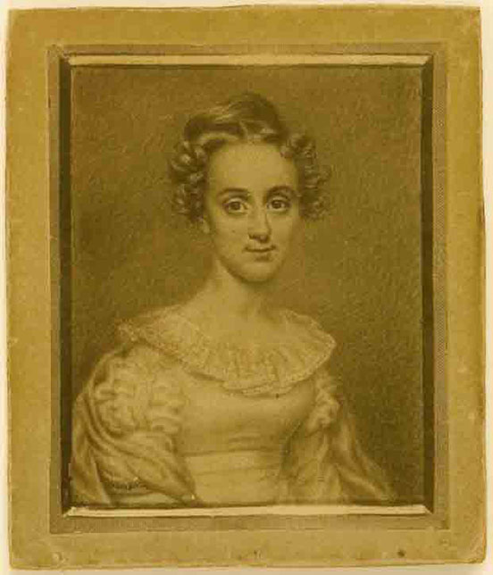
Photograph of a miniature of Mary Whistler [Mary Roberdeau Swift Whistler]. 1890s. Platinum print; photograph mounted on card. Inscribed on verso: “To Seymour Haden Esq from Lady Haden” and, in another hand: “Mary Whistler (1804-1827) 1st wife of Geo Washington Whistler, from a portrait.” GUL: Whistler Collection, PH 1/141.
Image 11
General Joseph Gardner Swift, brother of Major Whistler’s first wife, Mary Roberdeau (Swift) Whistler
George William Whistler, several years after his marriage to his second wife, Julia DeKay (Winans) Whistler
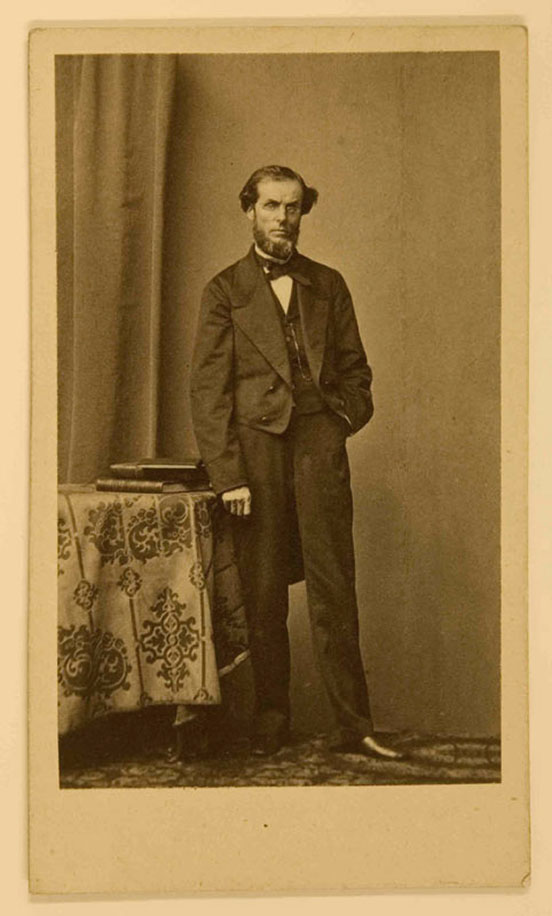
Andrei [“H.”] Denier (1820–1892). Photograph of George William Whistler. c. 1860. Albumen print. 8.7x5.3 cm; mounted on card, 10.4x6 cm. Imprint on mount in Cyrillic: “H. Denier, S. Peterburg”; inscription on verso: “Geo Wm Whistler.” GUL: Whistler Collection, PH1/75.
Image 13
George William Whistler wearing a shuba, when a partner in Winans, Whistler and Winans, and living in St. Petersburg
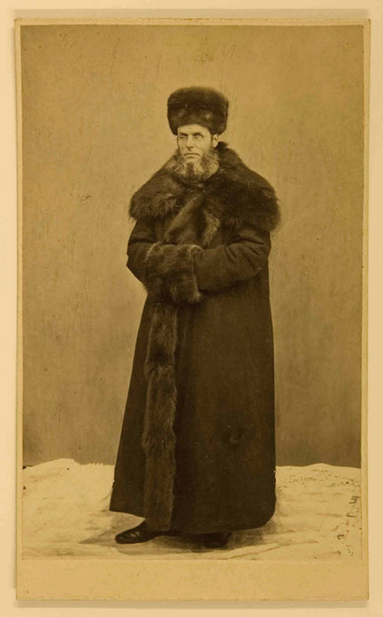
Jean Hoch. Photograph of George William Whistler, in Fur Hat and Coat. Between 1856 and 1869. Silver gelatin print mounted on card. 8.7 x 5.7 cm; card, 9.1 x 5.9 cm. Imprint on mount: “Photographie Jean Hoch, Grande Morskaia, maison Zolotoff no 26, [St Petersburg]. GUL: Whistler Collection, PH1/74.
Image 14
Julius Timoleon Ducatel, father of George William Whistler’s first wife, Mary Ducatel
Captain James Barry, of whose family Mary Ducatel’s mother, Joanna (Barry) Ducatel, was a member
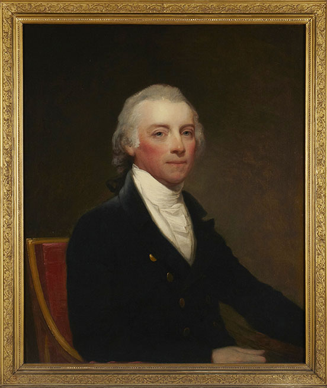
Gilbert Stuart (1755–1828). James Barry. Oil on canvas. 28¾ x 24 in. (73 x 61 cm). Princeton University Art Museum (y1979-52).
Image 16
Julia DeKay Winans, sister of Thomas DeKay Winans, before she became the second wife of George William Whistler
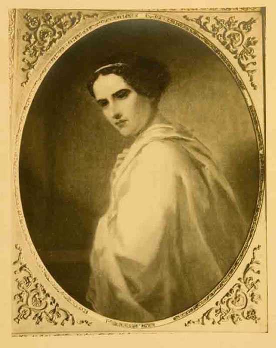
Thomas Winans. Photograph of a painting of Julia Whistler by Alfred Jacob Millar, 1847. 1943. Silver gelatin print. Inscription in pencil on verso: “Julia Winans daughter of Ross Winans married Geo. Wm Whistler, eldest son of Geo Washington Whistler. On 28 Dec 1847 Ross Winans paid Alfred J. Miller (portrait painter) $100 each, on a/c, for two portraits one of Miss Julia Winans the other of Madame Celeste Winans (eldest daughter of George Revillon). These photographs were taken in 1943 by Thomas Winans at Shamrock cliff Newport R.I. from the two portraits now owned by Mrs H.A. Prichard (née Lucette Hutton) a grand daughter of Thomas Winans & Celeste Revillon & great grand daughter of Ross Winans. The photographs were taken at the request of Dr J. Hall Pleasants who was anxious to locate the portraits. Alfred Jacob Miller (1810-74) active in Baltimore. Pupil of Thomas Sully.” GUL: Whistler Collection, PH 1/133.
Image 17
Deborah Delano (Whistler), Lady Haden, Major George Washington Whistler’s only daughter
Deborah at the piano with her daughter Annie, who was born while James Whistler was living in England in 1848
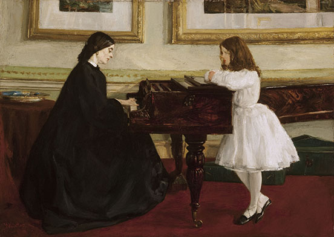
James McNeill Whistler (1834–1903). At the Piano. 1858–1859. Oil on canvas. 26 x 36 3/4 in. (67.63 x 93.35 cm). Taft Museum of Art, Cincinnati, OH (acc. no. 1962.7).
Image 19
Deborah reading, with her daughter Annie in the shadows
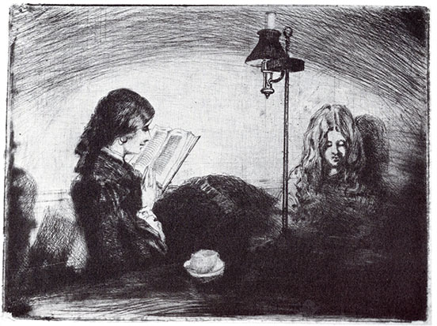
Francis Seymour Haden (1818–1910). A Lady Reading. 1858. Etching and drypoint. 11.8 x 16.1 cm. (Schneiderman, Catalogue Raisonné, p. 50, plate 10.VI) [full resolution image]
Image 20
Francis Seymour Haden, medical doctor and etcher, husband of Deborah (Whistler) Haden
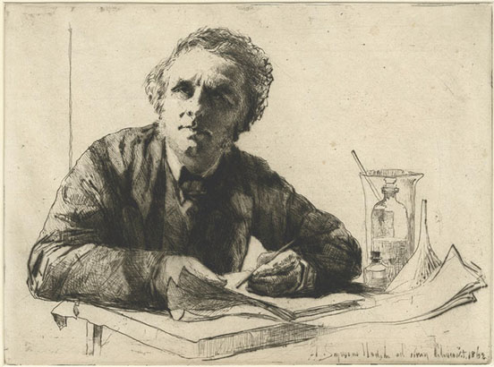
Francis Seymour Haden (1818–1910). Portrait of Francis Seymour Haden, no. 2. (while etching). 1862. Etching and drypoint. 19.5 x 26. 7 cm. On bottom right: “F. Seymour Haden Ad Vivam Delineavit.1862.” British Museum, London (1910,0421.226).
Image 21
This silhouette by Auguste Edouart bears the inscription: “George W. Whistler, Civil Engineer of Western Railroad, Boston 12th 1842 January and Daughter Miss D. Whistler August 11 1842.”
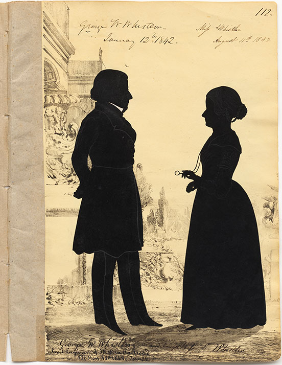
Auguste Edouart (1789–1861). George Washington Whistler and Lady Whistler Haden. 1842. Ink, chalk, and cut paper on board. National Portrait Gallery, Smithsonian Institution, Washington, DC; gift of Robert L. McNeill Jr.
Image 22
Martha (Kingsley) McNeill, Anna Whistler’s mother
Samuel Lovett Waldo (1783–1861) and William Jewett (1792–1874). Mrs. Charles (Martha Kingsley) MacNeill. 1834. Oil on wood. 24 1/8 x 19 1/2 in. (61.3 x 49.6 cm). Wadsworth Atheneum Museum of Art, Hartford, CT (1948.182); bequest of Clara Hinton Gould, 1948.
James Whistler at the age of nine or ten in St. Petersburg
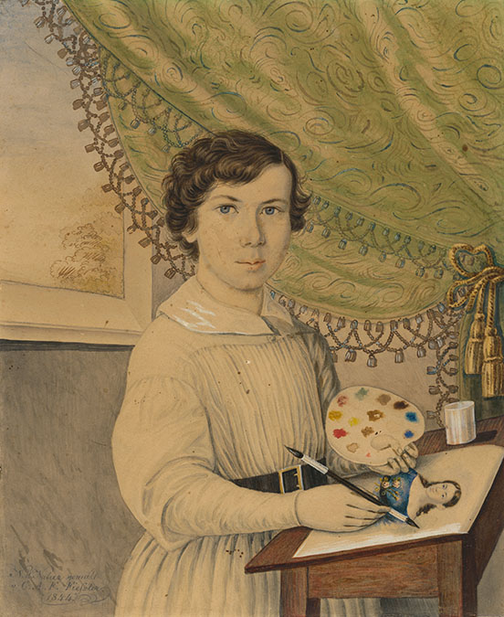
C.A.F. Fiessler. J. A. M. Whistler. 1844. Watercolor, ink, and pencil on board. 28.1 x 23.3 cm. Inscribed: “v. Natur gemalt v. C.A.F. Fiessler 1844.” National Portrait Gallery, Smithsonian Institution, Washington, DC (NPG.95.35).
Image 25
James Abbott Whistler in St. Petersburg at the age of ten
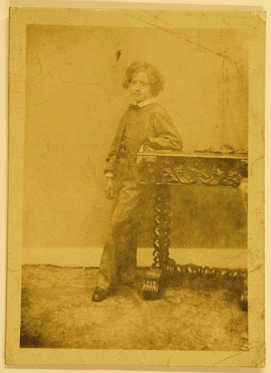
Photograph of James McNeill Whistler. c. 1844. Albumen print. 12 x 8.8 cm. Inscription on verso: “J. McN. Whistler aged abt 10.” GUL: Whistler Collection, PH1/93.
Image 26
James Abbott Whistler at about eleven years of age. The artist of this sketch might be James Whistler, but Thomas Wright and Aleksandr Osipovich Koritskii have also been proposed.
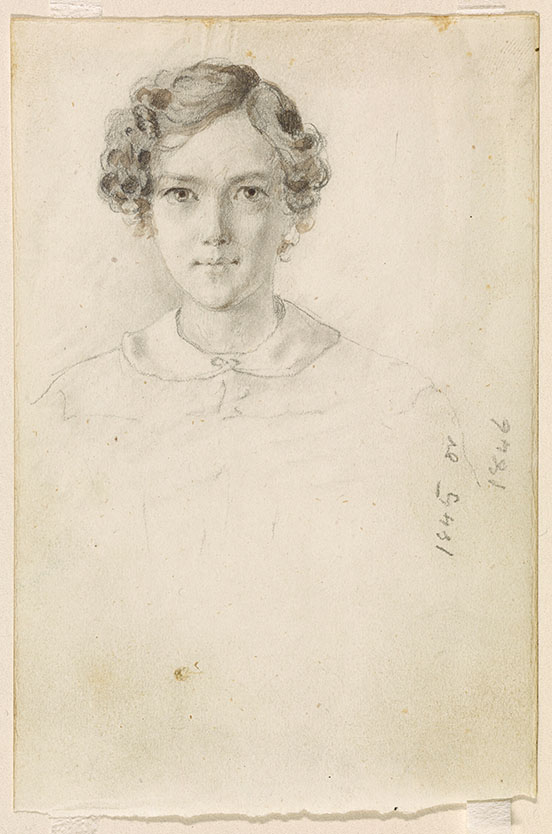
Portrait of Whistler. 1845 or 1846. Pencil and watercolor on wove paper. 4 5/8 x 3 1/16 in. (11.8 x 7.8 cm). Freer Gallery of Art, Smithsonian Institution, Washington, DC (F1898.144).
Image 27
James Abbott Whistler and William McNeill Whistler wearing the uniform of Monsieur Jourdan’s school
James Abbott Whistler in London, at the age of fourteen
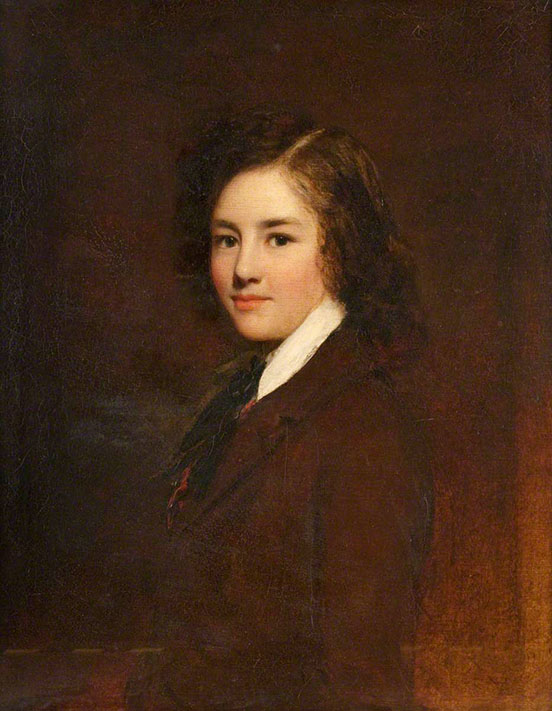
William Boxall (1800–1879). James McNeill Whistler, aged 14. 1848. Oil on canvas. 29½ x 24 in. 75 x 61 cm. Hunterian Art Gallery, Glasgow University (GLAHA:43500); gift from Rosalind Birnie Philip, 1935.
Image 29
Daguerreotype of James Abbott Whistler taken in 1849 in London at the request of Joseph Harrison Jr.
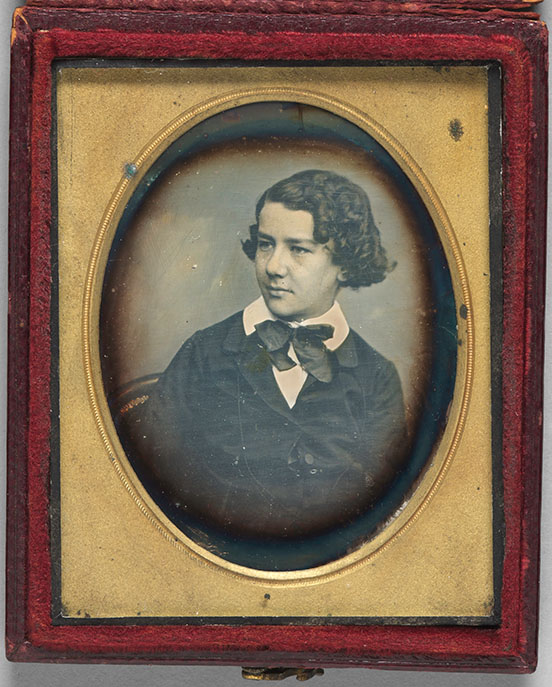
William Edward Kilburn (1818–1891). James Abbott McNeill Whistler (1834–1903). Daguerreotype. 1847–1849. 7 cm x 4 cm x 1.2 sight. Fogg Museum, Harvard University Art Museums, Cambridge, MA (P1978.93); gift of Dr. John H. Kennard.
Image 30
Daguerreotype of William McNeill Whistler taken in 1849 in London at the request of Joseph Harrison Jr.
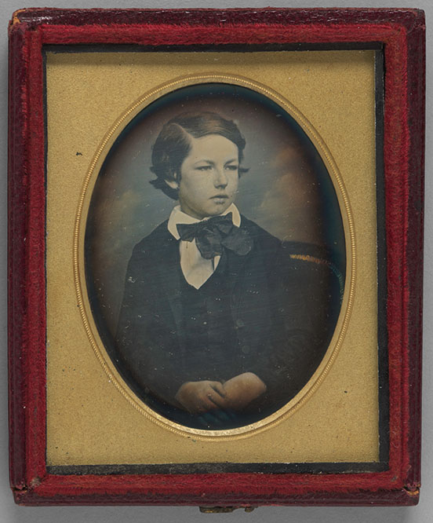
William Edward Kilburn (1818–1891). William Whistler (Brother of James Abbott McNeill Whistler). Daguerreotype. 1847–1849. 7 cm x 4 cm x 1.2 sight. Fogg Museum, Harvard University Art Museums, Cambridge, MA (P1978.94); gift of Dr. John H. Kennard.
Image 31
William Gibbs McNeill, Anna Whistler’s brother
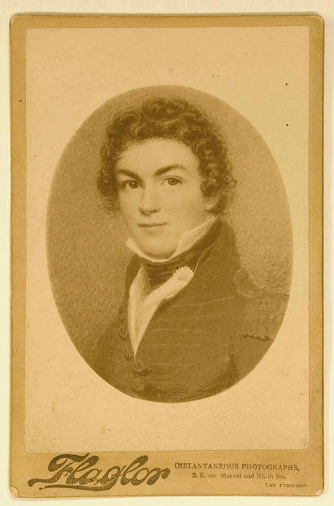
Photograph of William Gibbs McNeill. 1820s. Silver gelatin print. 14.5 x 9.8 cm; mounted on card, 16.5 x 10.8 cm. Imprint on mount: “Flaglor, instantaneous photographs, S.E. cor. Market and Ninth Sts, San Francisco.” GUL: Whistler Collection, PH1/20.
Image 32
Mary Isabella (McNeill) Rodewald, niece of Anna (McNeill) Whistler and daughter of William Gibbs McNeill
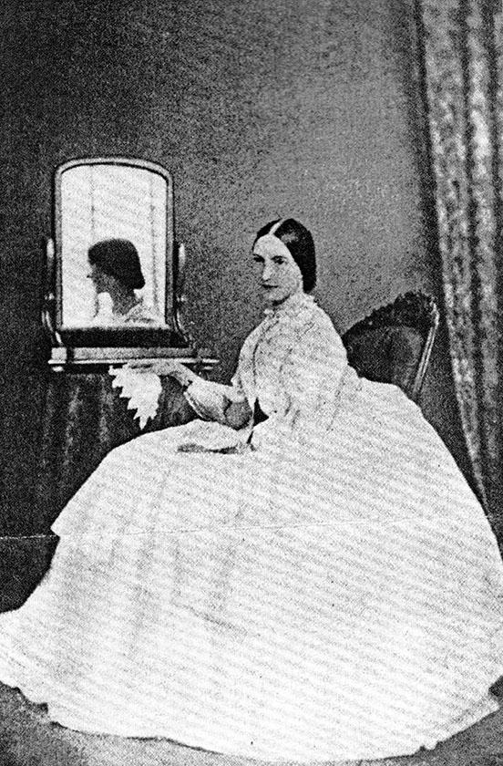Mary Isabella (McNeill) Rodewald. Photograph. Wolfgang Rohdewald family archive. [full resolution image]
Image 33
Catherine Julia (McNeill) Rodewald, niece of Anna Whistler, daughter of William Gibbs McNeill, and “twin” of Deborah Delano Whistler
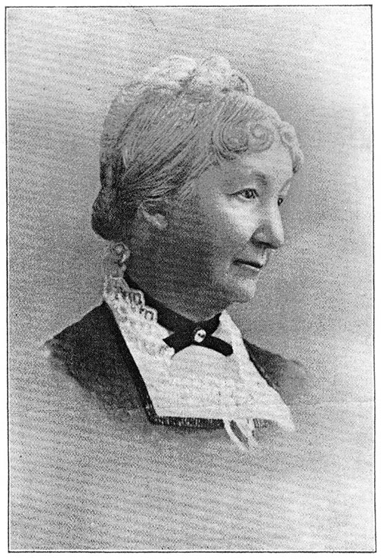
Catherine Julia (McNeill) Rodewald. Wolfgang Rohdewald family archive. [full resolution image]
Image 34
William Whistler, Major Whistler’s brother, in the early 1830s. “[The] portrait was most likely done when Whistler was stationed at Fort Niagara, New York. [The] painting would have come with him when he returned to Fort Mackinac in 1833 and was fort commandant.” (Brian S. Jaeschke, registrar of collections and archives, Mackinac State Historic Parks, 5 October 2021)
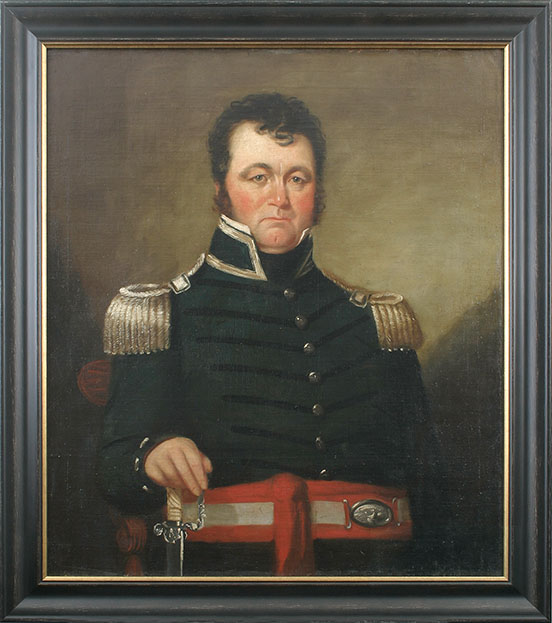
Grove Shelden Gilbert (1805–1885). Portrait of Major William Whistler. c. 1831. Oil on canvas. 30 x 35 in. Fort Mackinac Soldier Barracks, Mackinac Island, MI; part of the Mackinac State Historic Parks Collection. [full resolution image]
Image 35
Joseph Nelson Garland Whistler, son of William Whistler and nephew of Major George Washington Whistler
Dr. George E. Palmer, MD, brother-in-law of Anna (McNeill) Whistler and husband of her sister Catherine Jane (McNeill) Palmer of Stonington, Connecticut
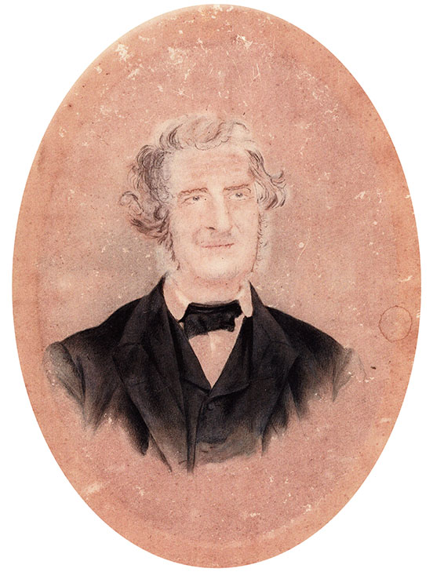
Dr. George Edwin Palmer, M.D. Courtesy of the Stonington Historical Society, Stonington, CT. [full resolution image]
Image 37
The Old Corner House, home of Catherine Jane (McNeill) Palmer and Dr. George E. Palmer, MD, Anna Whistler’s sister and brother-in-law, in Stonington, Connecticut
Donald McNeill Fairfax, a favorite nephew of Anna Whistler, and son of her sister Mary Isabella (McNeill) Fairfax
Photograph of Admiral Donald McNeill Fairfax. 1858. Albumen print. 9.1 x 5.9 cm; mounted on card, 10.5 x 6.3 cm. Printed at foot of mount: “Entered … in the year 1861 by J.E. Tilton & Co. in … District Court of … Massachusetts”; written on verso: “Sent to Kate R. McDiarmid by the late Mrs Anna Whistler Palmer (Stanton), Stonington, Conn.” GUL: Whistler Collection, PH 1/5.
Image 39
Alicia Caroline Margaret McNeill, half-sister of Anna (McNeill) Whistler
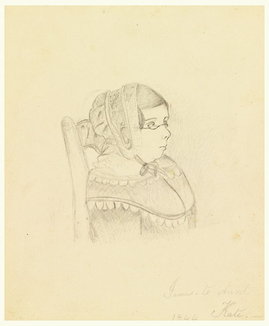
James McNeill Whistler (1834–1903). Drawing, Portrait of Aunt Alicia McNeill. 1844. Pencil on cream wove paper. 4 x 3 in. (11.7 x 9.3 cm). Inscribed “James to Aunt Kate” and, possibly in another hand, “1844.” inscribed on back of frame, in graphite: “James Mc N. Whistler’s pencil sketch of his Aunt Kate made in Petersburgh, Russia at the age of [sic: age missing] and sent to his aunt in Stonington, whose daughter Emma Palmer gave it to me, Katherine S. Dreier.” Cooper-Hewitt Museum, New York (18397263); gift of Mary E. Dreier from the estate of Katherine S. Dreier.
Image 40
Eliza Isabella (McNeill) (Wellwood) Winstanley, half-sister of Anna (McNeill) Whistler
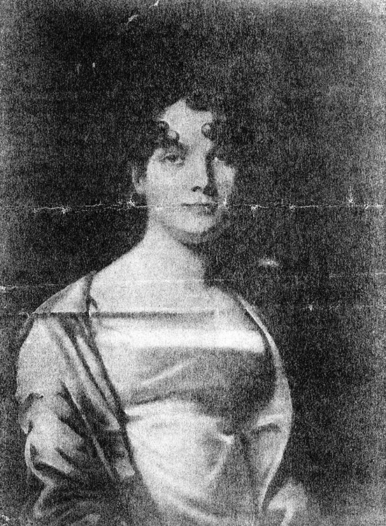
Sir Henry Raeburn (1756–1823). Lady Wellwood. Damaged photograph of portrait. Sold by the Ehrich Galleries to an American collector. [full resolution image]
Image 41
George Philip Cammann, brother of Catherine (Cammann) McNeill, wife of William Gibbs McNeill
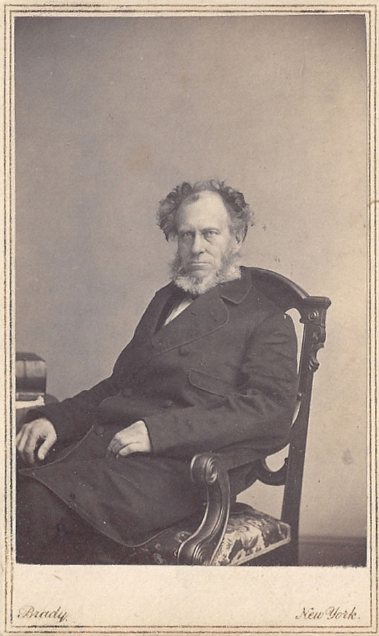
Matthew B. Brady & Studio, New York. Dr. Cammann. c. 1860. Carte-de-visite; albumen print photograph. [full resolution image]
Note
1 Possible sketches of John Stevenson Maxwell can be found in MacDonald, Catalogue Raisonné, p. 9. For more information, see Appendix J.